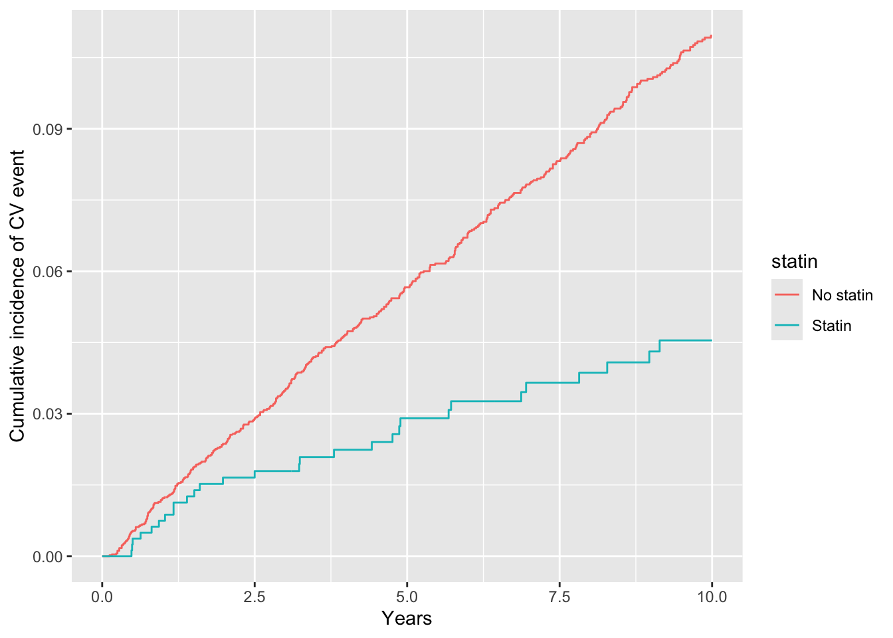
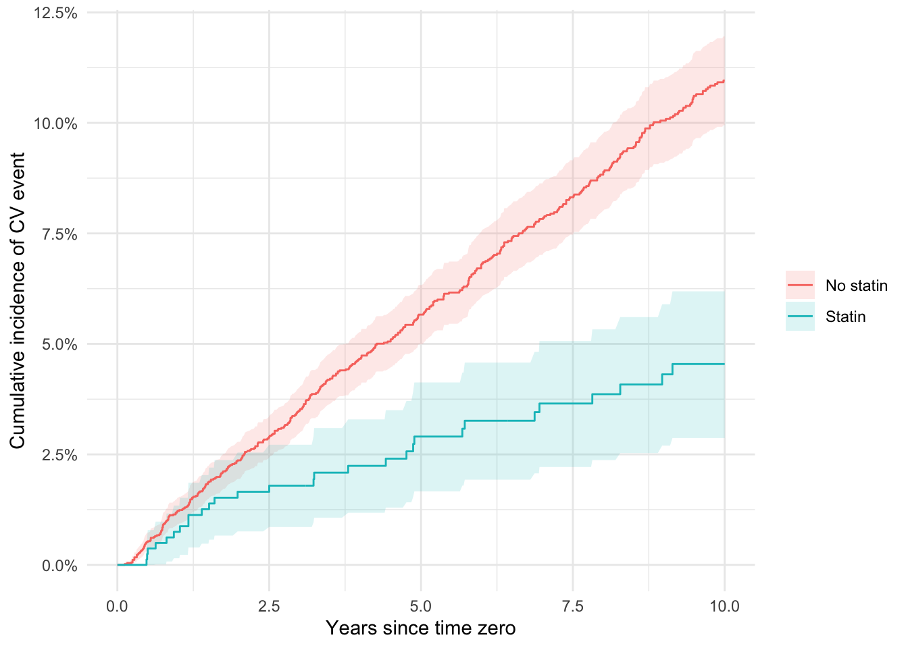
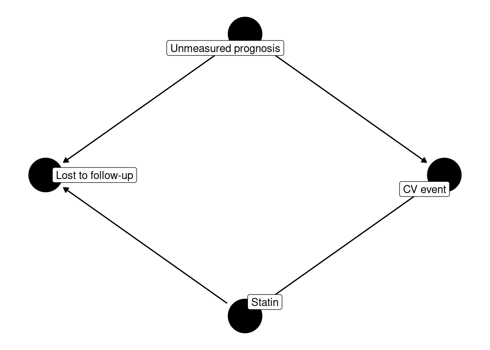

Chapter 10 Survival outcomes and censoring
Part II asked one question three ways and arrived at one answer: whatever
Cox-2 selectivity does to ulcer risk, the ns cohort cannot see it
clearly, and the crude signal of harm reflected confounding by indication. That
question had a convenient shape, with one row, one treatment, and one
binary outcome per patient, so that a risk was a proportion and an
adjusted risk a weighted proportion. Part III gives up that convenience.
We move to sta, the statin cohort, in which the outcome is a
cardiovascular event that may occur at any point over a decade and in
which patients stop being observed at very different times: because they
die, because they disappear from the data, or because the study ends.
Confounding does not go away, but a second problem is now layered on top
of it, and this chapter is concerned with learning to see that second
problem before adjusting for either.
10.1 The statin question
The target trial discipline of Chapter 4 works exactly as before; only some of the rows change.
| Protocol component | Target trial | Emulation using sta |
|---|---|---|
| Eligibility | Adults with an indication for lipid lowering and not already taking a statin | The patients assembled into sta, each entering at a qualifying visit (Chapter 6’s new-user question) |
| Treatment strategies | (1) Initiate a statin; (2) do not initiate | statin == 1 versus statin == 0 |
| Assignment | Random allocation | Not randomized; conditioning on sta_covs under conditional exchangeability |
| Follow-up | Time zero at randomization, to the event, death, loss to follow-up, or 10 years | Time zero at the qualifying visit; event_time |
| Outcome | First cardiovascular event | cv_event == 1 at event_time |
| Causal contrast | Intention-to-treat difference in risk at a stated horizon | Same, at 5 and 10 years |
| Analysis plan | Kaplan–Meier risk in each arm, contrasted at the horizon | Same, with adjustment standing in for randomization |
The two rows that changed, Follow-up and Causal contrast, changed
together. In Part II “risk” needed no qualifier because everyone was
followed for the same nominal period. Here it does: a risk is always a
risk by some time, and the trial must name the horizon before the
analysis can estimate anything. The danger is that the Part II machinery
still runs if we ignore this: there is a cv_event column of zeros and
ones, and mean(cv_event) returns a number without objection.
sta |>
group_by(statin) |>
summarise(n = n(), events = sum(cv_event), proportion = mean(cv_event),
median_followup = median(event_time), .groups = "drop")## # A tibble: 2 × 5
## statin n events proportion median_followup
## <int> <int> <int> <dbl> <dbl>
## 1 0 5327 431 0.0809 8.4
## 2 1 838 29 0.0346 8.9The two proportions are 8.1% and
3.5%, and neither is a risk. They are
counts of events divided by counts of people who were watched for
different lengths of time: median follow-up is
8.4 years in one arm and
8.9 in the other, only
42% of the cohort is followed the full
10 years, and 13% leave within
two. A logistic regression of cv_event on statin and sta_covs would
produce a tidy odds ratio for a quantity with no definition, since the
denominator of each “risk” mixes people observed for one year with people
observed for ten. Nor can the problem be remedied by restricting to
patients with complete follow-up: staying under observation for ten years
is not a baseline characteristic but something that happens after time
zero, and Chapter 5 named the cost of selecting on such a variable. We
need estimators built for unequal follow-up.
10.2 Anatomy of time-to-event data
Time-to-event data have exactly two columns at their core: a time and an
indicator of what happened at that time. R/setup.R builds both, and the
code is worth reading as a substantive statement about the study rather
than as boilerplate.
admin_end <- 10 # administrative end of follow-up (years)
sta <- sta |>
mutate(
statin = as.integer(statin_use == "Statin"),
event_time = pmin(cv_time, death_time, loss_fu_time, admin_end, na.rm = TRUE),
cv_event = as.integer(!is.na(cv_time) & cv_time <= event_time)
)The raw cohort supplies three latent times. cv_time is when a
cardiovascular event occurred, and is NA for the
93% of patients in whom
one never did; death_time and loss_fu_time are the analogous times of
death and of dropping out of observation, each NA for patients to whom
that never happened. No patient’s data continue past the earliest of
these, so pmin(..., na.rm = TRUE) — with admin_end as a fourth
competitor that every patient always faces — gives event_time, the
moment observation stops. Then cv_event asks a single question about
that moment: was the thing that stopped observation the outcome itself?
When it was not, the patient is censored — we know only that no
cardiovascular event had occurred by event_time, not that none ever
will. Tabulating which of the four possibilities came first shows what
the cohort is made of.
ended <- sta |>
mutate(ended_by = case_when(
cv_event == 1 ~ "CV event",
!is.na(death_time) & death_time <= event_time ~ "Death",
!is.na(loss_fu_time) & loss_fu_time <= event_time ~ "Lost to follow-up",
TRUE ~ "Administrative end"
))
ended |>
count(statin, ended_by) |>
pivot_wider(names_from = statin, values_from = n, names_prefix = "statin_")## # A tibble: 4 × 3
## ended_by statin_0 statin_1
## <chr> <int> <int>
## 1 Administrative end 2204 371
## 2 CV event 431 29
## 3 Death 221 64
## 4 Lost to follow-up 2471 374460 patients of 6165 have an observed cardiovascular event; everyone else is censored, most of them by loss to follow-up or by the administrative end. Censoring at the administrative end is the benign kind, since it happens at a calendar boundary that has nothing to do with any patient’s prognosis, and every estimator in this chapter handles it without difficulty.
Death is the uncomfortable case. 285 patients died before having a cardiovascular event, and the code above treats them exactly like the patients who moved away: censored, contributing follow-up up to the moment of death and nothing after. That is a strong substantive assumption. A patient who dies has not merely become unobservable, since she can never have the outcome, so treating her as though she were still at risk in some unseen continuation of the study makes the estimated risk a risk in a hypothetical world in which death from other causes has been removed. Furthermore, death is not evenly distributed across the arms: it ends follow-up for 7.6% of statin initiators against 4.1% of non-initiators, so whatever distortion the assumption introduces is not the same in the two arms. The defensible treatments of a competing risk are to report the cumulative incidence function, which gives the fraction who actually experience a cardiovascular event first and leaves the deaths where they are, or to define a composite outcome of cardiovascular event or death. We take the conventional route in this book because it keeps the censoring machinery of Chapter 11 in one piece, and we flag it as a limitation rather than a solution, although we return to it below, once the Kaplan–Meier estimator has given us something to compare against.
10.3 Kaplan–Meier
The Kaplan–Meier estimator addresses the unequal-follow-up problem by declining to compute a single proportion. It works forward through the observed event times, asking at each one what fraction of the patients still under observation just before that instant survived it, and multiplies those conditional fractions together. A patient censored at 2.3 years contributes to every factor up to 2.3 years and then leaves the denominator, so her partial information is used without her absence being counted as evidence that she remained event-free. The product is the survival curve \(S(t)\), and one minus it is the cumulative incidence — the risk by time \(t\) — which is what we want to contrast.
library(survival)
km <- survfit(Surv(event_time, cv_event) ~ statin, data = sta)
km_tidy <- broom::tidy(km) |>
mutate(statin = if_else(str_detect(strata, "=1"), "Statin", "No statin"),
risk = 1 - estimate)
ggplot(km_tidy, aes(time, risk, color = statin)) +
geom_step() + labs(x = "Years", y = "Cumulative incidence of CV event")
survfit() fits one curve per level of the right-hand side, and
broom::tidy() returns it as a data frame with one row per event time —
time, estimate for \(S(t)\), pointwise confidence limits, and a
strata label from which the arm is recovered with str_detect(). Since
this picture recurs throughout survival analysis, it is worth wrapping
once, with confidence bands added and an argument for weights that a
weighted analysis can supply.
plot_km <- function(data, treat, time = "event_time", event = "cv_event",
wt = NULL, labels = NULL) {
form <- reformulate(treat, sprintf("Surv(%s, %s)", time, event))
fit <- survfit(form, data = data,
weights = if (!is.null(wt)) data[[wt]])
curves <- broom::tidy(fit) |>
mutate(arm = str_remove(strata, ".*="),
arm = if (is.null(labels)) arm else unname(labels[arm]),
risk = 1 - estimate)
ggplot(curves, aes(time, risk, colour = arm, fill = arm)) +
geom_ribbon(aes(ymin = 1 - conf.high, ymax = 1 - conf.low),
alpha = 0.15, colour = NA) +
geom_step() +
scale_y_continuous(labels = scales::percent) +
labs(x = "Years since time zero", y = "Cumulative incidence of CV event",
colour = NULL, fill = NULL) +
theme_minimal()
}That code lives in R/km.R, so later analyses can source it rather than
redefine it. The wt argument names a column of weights and is inert
unless one is supplied; it is how a weighted analysis would pass
censoring weights.

Read the curves at a horizon and the contrast becomes a statement someone
could act on. At five years the estimated risk is
5.7% without a statin against
2.9% with one; at
10 years, 11.0%
against 4.5%. Both
10-year risks exceed the naive proportions we started with,
for the obvious reason: the naive calculation charged each arm only with
the events its censored patients stayed under observation long enough to
have. These are crude curves. Nothing has been adjusted, the arms differ
at baseline, and the outcomes in sta are simulated, so the numbers
should be read as an illustration of what the estimator computes rather
than as evidence about statins.
10.4 Death as a competing risk
Now return to the deaths. Every risk above is a net risk: a risk in a hypothetical world where the cardiovascular event is the only thing that can happen to a patient, death from other causes having been abolished. The alternative leaves the deaths where they fall and estimates the cumulative incidence function — the fraction of patients who actually experience a cardiovascular event first, in a world that still contains death. That is a crude risk. Neither quantity is the wrong one; they answer different questions, and which to report depends on whether the reader wants to know what treatment would do absent competing mortality or what will happen to patients like these.
Coding it requires a three-valued status rather than a binary one. Death competes only when it arrives first, so a patient who has a cardiovascular event and dies a year later contributes a cardiovascular event and nothing else.
sta_cr <- sta |>
mutate(event_type = case_when(
cv_event == 1 ~ 1L, # CV event first
!is.na(death_time) & death_time <= event_time ~ 2L, # death first
TRUE ~ 0L # still censored
))
table(sta_cr$event_type, sta_cr$statin)##
## 0 1
## 0 4675 745
## 1 431 29
## 2 221 64The 1 row recovers the 460 cardiovascular events exactly, and the
2 row isolates the 285 patients whose follow-up ended in death
with no cardiovascular event before it, which are the patients the
Kaplan–Meier analysis treated as though they had merely moved away. Handing
survfit() a factor status instead of an indicator switches it into
multi-state mode: the first level is censoring, and each remaining level
gets a curve of its own. The cardiovascular curve is the
Aalen–Johansen estimate, which for a single competing event is the
cumulative incidence function we are after.
cr <- survfit(Surv(event_time, factor(event_type)) ~ statin, data = sta_cr)
cr_h <- summary(cr, times = c(5, admin_end))
cif <- matrix(cr_h$pstate[, "1"], nrow = 2, byrow = TRUE,
dimnames = list(c("no", "statin"), c("y5", "y10")))
round(100 * cif, 2)## y5 y10
## no 5.58 10.65
## statin 2.83 4.33At five years the crude risk is 5.58% without a statin against the net 5.66%, and 2.83% with a statin against the net 2.90%. The crude risk is lower in both arms, and it must be: some patients die before they can have the event, and the cumulative incidence function counts them among those who did not have it while the Kaplan–Meier estimator removes them from the denominator and lets the remaining patients speak for them. Here the two differ by less than a tenth of a percentage point, because death before a cardiovascular event is uncommon in the first five years. By 10 years the gap has grown, to 0.31 points in the untreated arm and 0.21 in the treated — still small, but moving as the mechanism predicts once more of the cohort has died. The size of the discrepancy is governed by how much competing death accumulates over the horizon, so the same code applied to an older cohort followed for twenty years would separate the two curves visibly.
The regression analog of this estimator is Fine–Gray subdistribution hazards regression, which models the cumulative incidence function directly in the way that Cox regression models the cause-specific hazard. We do not pursue it here, since the purpose of this section is to make the assumption behind the rest of the chapter visible and quantified rather than only disclosed.
10.5 Risks versus hazards
The Kaplan–Meier curve is built from conditional pieces, and those pieces have a name of their own. The hazard at time \(t\) is the instantaneous rate of the event among those still event-free and still under observation at \(t\); the cumulative risk by \(t\) is the probability of having had the event by then, starting from time zero. Cox proportional hazards regression, the default survival model in most of applied epidemiology, estimates a ratio of hazards.
coxph(Surv(event_time, cv_event) ~ statin, data = sta) |>
broom::tidy(exponentiate = TRUE, conf.int = TRUE)## # A tibble: 1 × 7
## term estimate std.error statistic p.value conf.low conf.high
## <chr> <dbl> <dbl> <dbl> <dbl> <dbl> <dbl>
## 1 statin 0.424 0.192 -4.48 0.00000758 0.291 0.617early <- sta |> mutate(t = pmin(event_time, 2),
e = cv_event * (event_time <= 2))
late <- sta |> filter(event_time > 2)
bind_rows(
"0-2 years" = broom::tidy(coxph(Surv(t, e) ~ statin, data = early),
exponentiate = TRUE, conf.int = TRUE),
"after 2 years" = broom::tidy(coxph(Surv(event_time, cv_event) ~ statin,
data = late),
exponentiate = TRUE, conf.int = TRUE),
.id = "period"
)## # A tibble: 2 × 8
## period term estimate std.error statistic p.value conf.low conf.high
## <chr> <chr> <dbl> <dbl> <dbl> <dbl> <dbl> <dbl>
## 1 0-2 years statin 0.695 0.292 -1.25 2.12e-1 0.392 1.23
## 2 after 2 years statin 0.322 0.256 -4.43 9.62e-6 0.195 0.532A single hazard ratio fitted to the whole decade is 0.42. Splitting the decade in two gives 0.69 for the first interval and 0.32 for the remainder. The single number was therefore an average over periods that do not agree, which is the milder of two interpretive problems.
The more serious problem is what the second interval conditions on. Its risk set holds only patients who reached two years event-free and still observed, and surviving two years is not a baseline characteristic but an outcome, influenced by treatment and by every unmeasured prognostic factor a patient carries. Comparing arms within that risk set therefore conditions on a post-treatment common effect, which is the collider stratification of Chapter 5. If a statin genuinely prevents early events, the statin patients still at risk at two years include people the other arm has already lost, and the arms are no longer exchangeable however carefully we adjusted at time zero. This is what Hernán (2010) called the hazard ratio’s built-in selection bias, and the reasoning above follows his “The hazards of hazard ratios” editorial. Every hazard beyond the first instant is conditional on survival, so a hazard ratio is not a contrast of two potential outcomes in a common population, and our two period-specific estimates cannot distinguish a truly time-varying effect from selection. Nor is proportional hazards a technical detail that a diagnostic test can rescue, since the assumption being made is that this awkward conditional ratio happens to be constant over follow-up.
Risks do not have this problem. \(\Pr(Y(1) \le t)\) and
\(\Pr(Y(0) \le t)\) are both defined over everyone who started, so their
difference or ratio is a causal contrast in the sense of Chapter 3. This
book therefore reports risks at named horizons — five years and
10 years for sta — and treats hazard ratios, when they
appear at all, as a modeling device on the way to a risk curve rather
than as the estimand.
10.6 When censoring lies
Kaplan–Meier removes a censored patient from the denominator and carries
on with the rest, which is defensible only if the patients who
remain represent the patients who left. Formally, censoring must be
non-informative: at each time, those still under observation must
have the same hazard as those censored just before, conditional on
whatever we have adjusted for. Administrative censoring satisfies this by
construction. Loss to follow-up need not, and in sta it is the largest
single reason follow-up ends.
Since censoring is not random by design, the first step is to examine who leaves. We compare patients censored by loss to follow-up in the first two years against everyone else on the baseline covariates we have.
loss <- sta |>
mutate(early_loss = as.integer(!is.na(loss_fu_time) &
loss_fu_time <= 2 &
event_time == loss_fu_time))
loss |>
group_by(early_loss) |>
summarise(n = n(), age = mean(age), statin = mean(statin),
hypertension = mean(hypertension == "Yes"),
heart_failure = mean(heart_failure == "Yes"),
kidney_disease = mean(chronic_kidney_disease == "Yes"),
tobacco_use = mean(tobacco_use == "Yes"), .groups = "drop") |>
knitr::kable(digits = 3)| early_loss | n | age | statin | hypertension | heart_failure | kidney_disease | tobacco_use |
|---|---|---|---|---|---|---|---|
| 0 | 5547 | 54.119 | 0.137 | 0.301 | 0.021 | 0.012 | 0.123 |
| 1 | 618 | 52.487 | 0.129 | 0.257 | 0.011 | 0.003 | 0.152 |
The 618 patients lost early are slightly younger and slightly less hypertensive than the rest, but every standardized difference in the table is below 0.10 in absolute value, and loss is about equally common in the two arms. On the measured variables, then, this cohort’s censoring looks close to non-informative, which is reassuring as far as it goes. The comparison speaks only to covariates recorded at baseline, whereas the assumption we need concerns whatever drives dropping out at each moment of follow-up: a worsening symptom, a change of insurer, a decision to stop attending. None of those variables is available in these data.
The structure of the problem is one we have already diagrammed. Suppose an unmeasured element of prognosis affects both the cardiovascular hazard and the chance of staying under observation, and suppose treatment also influences whether a patient stays.
library(ggdag)
dag_censor <- dagify(
cv ~ statin + u,
c ~ statin + u,
exposure = "statin", outcome = "cv",
labels = c(statin = "Statin", cv = "CV event",
u = "Unmeasured prognosis", c = "Lost to follow-up")
)
ggdag(dag_censor, text = FALSE, use_labels = "label") + theme_dag()
Loss to follow-up is a collider: treatment points into it and unmeasured
prognosis points into it. Every risk set beyond time zero consists of
patients who have not yet been lost, so the analysis conditions on that
collider at every step, whether or not anyone wrote a filter() call.
This is the same argument Chapter 5 made about selection bias, now
indexed by time. The consequence is an association between statin and cv running
through u that no amount of baseline adjustment removes, because the
bias is created after time zero by who is left to observe.
The remedy follows the logic of Chapter 9 rather than that of Chapter 7. If we cannot condition our way out of a collider, we can reweight: model the probability of remaining uncensored, given treatment and the covariates that predict dropping out, and give each patient still under observation a weight inversely proportional to that probability, so that those who remain stand in for the similar patients who left. Those are inverse probability of censoring weights, they multiply cleanly against the treatment weights we already know how to build, and Chapter 11 constructs them for exactly the curves we have just drawn.
10.7 Exercises
- Using
km_tidyfrom thekmchunk, extract the estimated cumulative incidence at five years in each arm — take the last row in each arm withtime <= 5— and report the risk difference and risk ratio. Confirm your answer againstsummary(km, times = 5). Why is taking the last row at or before the horizon the right way to read a step function, rather than interpolating between rows? - Build a survival outcome for all-cause death. Do not reuse
event_time, which is already truncated at cardiovascular events: build a fresh follow-up time fromdeath_time,loss_fu_time, andadmin_endonly, and setdeath_eventto 1 whendeath_timeis the earliest of those three. Pass the new columns toplot_km()through itstimeandeventarguments to draw cumulative mortality bystatin. Which arm has higher mortality, and how does that picture change your reading of the cardiovascular curves in this chapter? - Run
plot_km()withtreat = "statinpotency_use", which has three levels rather than two. Report the 10-year risk in each of the three groups. What would have to be true for the contrast between the low- and high-potency groups to be interpretable as a causal effect of potency, and which row of this chapter’s target trial table is doing the most work in that argument? - 1659 patients are censored
before five years, meaning
cv_event == 0andevent_time < 5; count them by arm withsum()before you start. Bound the five-year risk in each arm under two extreme assumptions about them. For the upper bound, assume every censored patient had the event immediately after censoring, so the five-year risk is the observed events plus all of them, over everyone who started. For the lower bound, assume none of them ever has the event, so the numerator is the observed events alone. Report both bounds and the resulting risk difference in each direction, and set them beside the Kaplan–Meier estimates reported above. How wide is the interval between the two bounds, what does its width say about how much work the non-informative-censoring assumption is doing here, and which of the two extremes strikes you as the less plausible for the patients lost to follow-up insta?